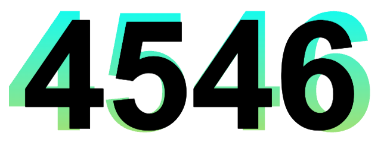
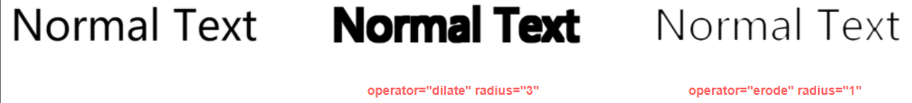
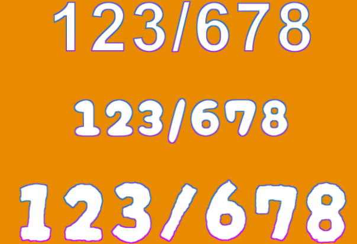

HaoTian · 2024-11-30 14:07:19
首先，比较容易想到的写法是通过元素叠加实现。
background-clip: text 实现渐变文字，并且通过 transform 或者设置大几号的文字，实现渐变字体我们尝试一下这种方式：
<div data-text="4"></div>
div {
position: relative;
width: 300px;
height: 150px;
font-size: 100px;
text-align: center;
font-weight: bold;
&::before,
&::after {
content: attr(data-text);
position: absolute;
inset: 0;
color: #000;
}
&::before {
transform: scale(1.1);
background: linear-gradient(cyan, #fc0);
background-clip: text;
color: transparent;
}
}
这里，我们让 before 伪元素 和 after 伪元素 两个伪元素进行具体内容的展示，after 伪元素 只展示具体的文字，字号为 100px，而before 伪元素放大一点点后叠加在另外一个伪元素下面，效果如下：
可以看到，这种方式，边框并不均匀。
而且，如果字数更多，效果更差：
所以，通过叠加实现，显然不可取。
到这里，我又想到，在之前，写过的两篇文章：
我们借助了 SVG 滤镜能够实现对元素的腐蚀（变薄）或扩张（加粗）。
看看原理，feMorphology 为形态滤镜，它的输入源通常是图形的 alpha 通道，用来它的两个操作可以使源图形腐蚀（变薄）或扩张（加粗）。
使用属性 operator 确定是要腐蚀效果还是扩张效果。使用属性 radius 表示效果的程度，可以理解为笔触的大小。
erode 腐蚀模式，dilate 为扩张模式，默认为 erode我们将这个滤镜简单的应用到文字上看看效果：
<div class="g-text">
<p>Normal Text</p>
<p class="dilate">Normal Text</p>
<p class="erode">Normal Text</p>
</div>
<svg width="0" height="0">
<filter id="dilate">
<feMorphology
in="SourceAlpha"
result="DILATED"
operator="dilate"
radius="3"
></feMorphology>
</filter>
<filter id="erode">
<feMorphology
in="SourceAlpha"
result="ERODE"
operator="erode"
radius="1"
></feMorphology>
</filter>
</svg>
p {
font-size: 64px;
}
.dilate {
filter: url(#dilate);
}
.erode {
filter: url(#erode);
}
效果如下：最左边的是正常文字，中间的是扩张的模式，右边的是腐蚀模式，看看效果，非常好理解：
如果能理解到这一点，我们可以尝试：
background-clip: text 实现渐变文字代码如下：
<div data-text="123/678"></div>
<div data-text="123/678"></div>
<div data-text="123/678"></div>
<svg width="0" height="0">
<filter id="outline">
<feMorphology
in="SourceAlpha"
result="ERODE"
operator="erode"
radius="2"
></feMorphology>
<feFlood flood-color="#fff" flood-opacity="1" result="flood"></feFlood>
<feComposite
in="flood"
in2="ERODE"
operator="in"
result="OUTLINE"
></feComposite>
<feMerge>
<feMergeNode in="OUTLINE" />
</feMerge>
</filter>
</svg>
div {
position: relative;
width: 100vw;
height: 150px;
font-size: 120px;
font-weight: bold;
text-align: center;
&::before,
&::after {
content: attr(data-text);
position: absolute;
inset: 0;
}
&::before {
color: transparent;
background: linear-gradient(0deg, #da00ff, #2a79b7, #7e3eff);
background-clip: text;
}
&::after {
filter: url(#outline);
}
}
div:nth-child(2) {
font-family: "Cherry Bomb One", cursive;
font-size: 90px;
}
div:nth-child(3) {
font-family: "Darumadrop One", cursive;
font-size: 150px;
}
基于此，看看效果，这里我尝试了 3 种不同的字体：
看着还是挺不错的，利用 SVG 能够使源图形腐蚀（变薄）或扩张（加粗）的能力，我们巧妙的实现了文字的渐变边框效果。
完整的 DEMO，你可以戳这里：CodePen Demo -- SVG 实现渐变边框字体
结束了吗？还没有。一开始我就有想过使用 -webkit-text-stroke 来实现。
但是转念一想，认为 -webkit-text-stroke 无法实现渐变边框，并且它需要使用 -webkit- 前缀，可能会存在兼容问题，结果在讨论的过程中，牛逼的群友给出了使用 -webkit-text-stroke 实现的方式：
<div class="wrapper">
<span class="text" data-text="1234567890"></span>
<span class="text" data-text="我能吞下玻璃而不伤身体"></span>
</div>
.wrapper {
position: relative;
font-size: 128px;
--stroke-width: 12px;
--background-gradient: linear-gradient(red 0%, green 100%);
--text-gradient: linear-gradient(white 0%, cyan 100%);
}
.text {
position: relative;
}
.text::before,
.text::after {
content: attr(data-text);
display: block;
background-clip: text;
color: transparent;
}
.text::before {
position: absolute;
inset: 0;
background-image: var(--background-gradient);
-webkit-text-stroke: var(--stroke-width);
}
.text::after {
position: relative;
z-index: 1;
background-image: var(--text-gradient);
}
-webkit-text-stroke 解法思路本质上也是用的它的背景色，使用了 stroke 的伪元素只是为了让其字更大一圈，从而背景色可以露出来。
并且，-webkit-text-stroke 的边框颜色，可以支持直接设置渐变色，如此一来，我们就得到非常完美的效果：
并且，从 CanIUse - text-stroke，到今天，-webkit-text-stroke 的兼容性已经非常好了：
我们完全可以放心使用 -webkit-text-stroke 设置文字的各种类型边框效果。
完整的 DEMO，你可以戳这里：CodePen Demo -- CSS text stroke with gradient By Rex Zeng
简单总结一下，综上所述，其实 -webkit-text-stroke 是最简单最便捷的实现渐变文字边框的方式。当然，SVG 方法也有其优势，如果需要多重边框效果，甚至是多重渐变文字边框效果，此时，SVG 会更为强大。